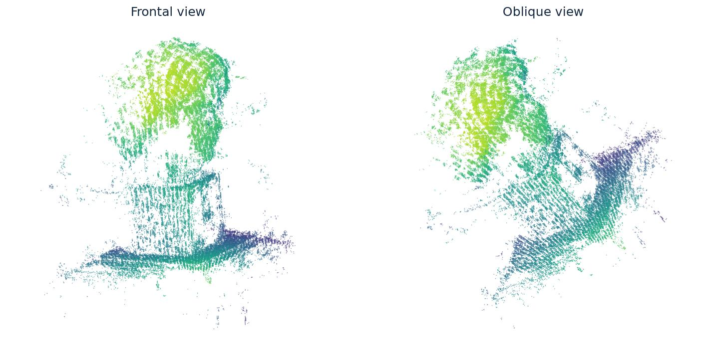
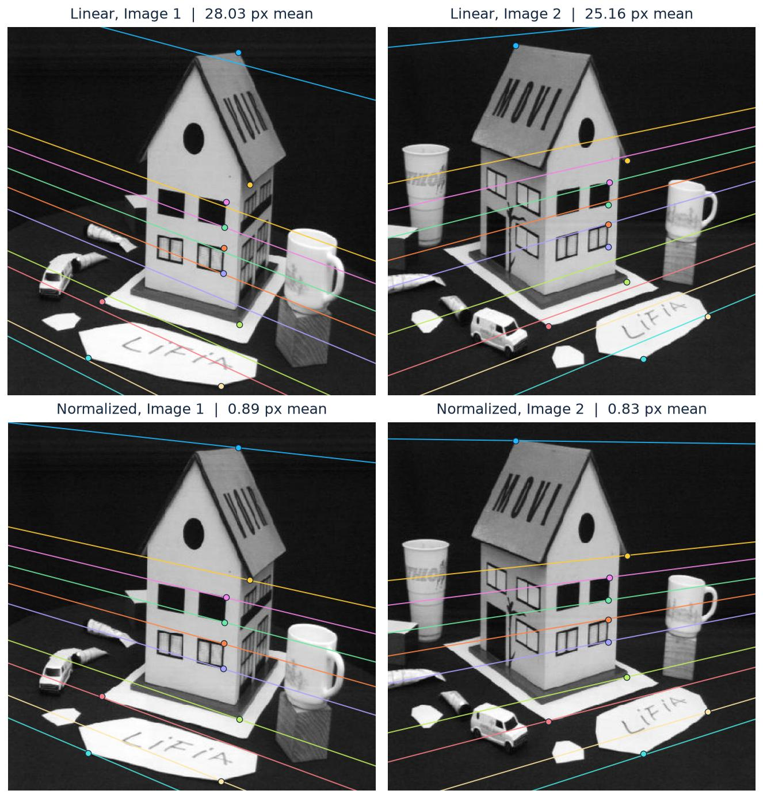
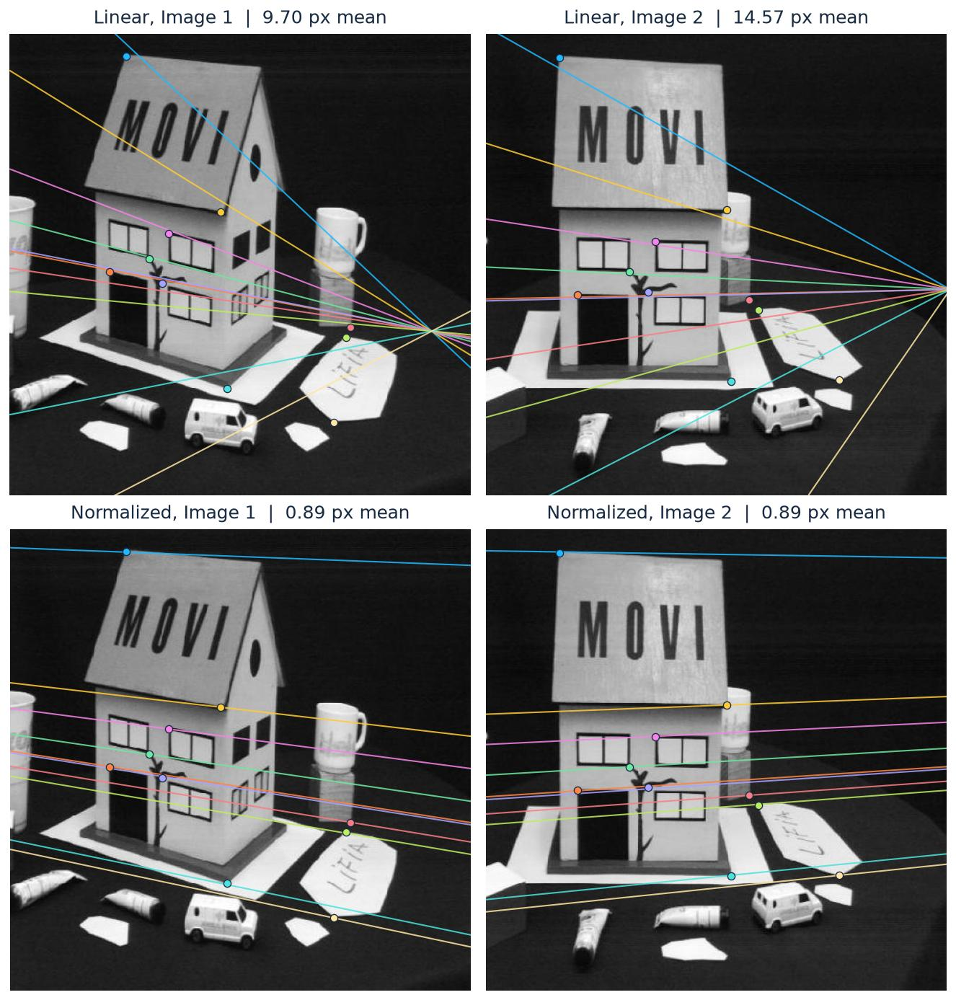
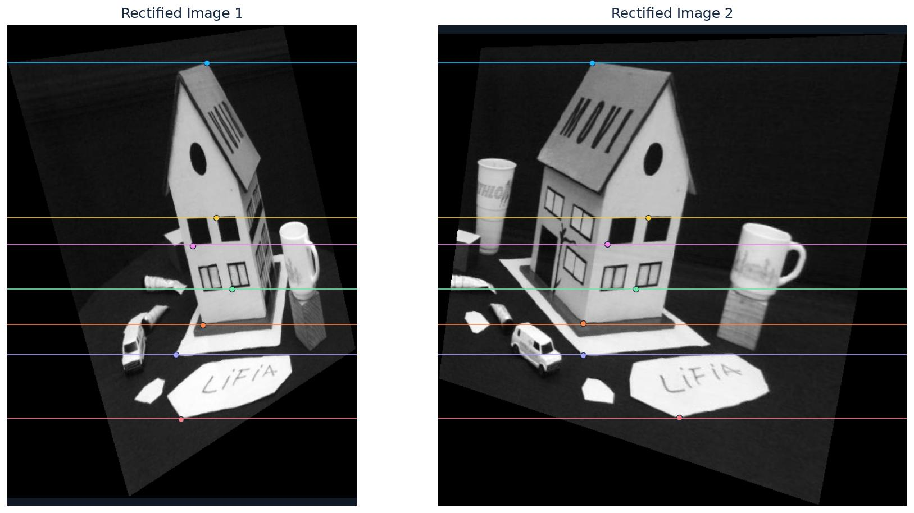
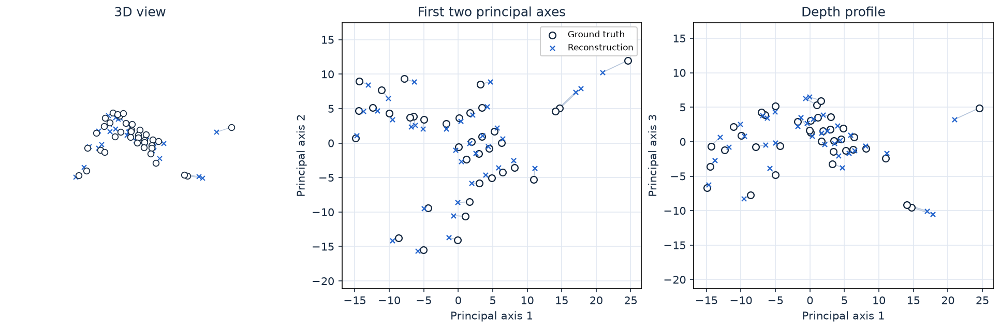
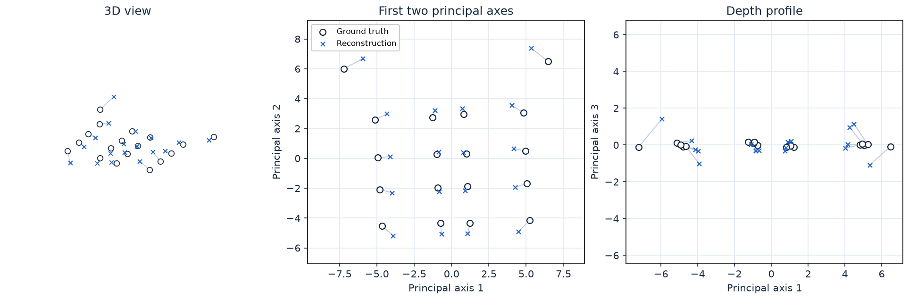
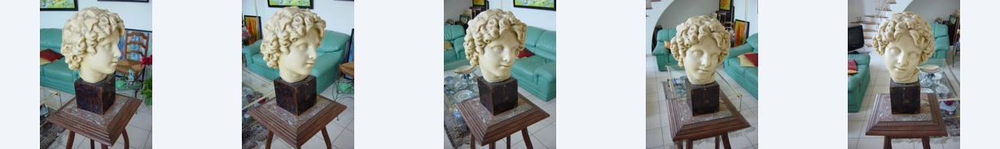

Set 1 · Linear
0.000001552 -0.000008182 -0.001504401 -0.000005870 -0.000000303 -0.011360761 -0.003523120 0.014145388 0.999828068
SYDE 671 / Assignment 4 / Fall 2026
Fundamental matrices, stereo rectification, affine factorization, and projective reconstruction.

Normalization improves the fundamental matrix on both supplied stereo pairs. The fitted epipolar geometry then makes the toy-house pair directly comparable along horizontal scanlines. Affine factorization recovers the broad 3D layout, but depth becomes poorly constrained in the near-planar subset. Projective triangulation and the supplied camera-merging pipeline recover the front of the statue from five photographs.
Let p1 and p2 be matching homogeneous pixel coordinates. The convention is p2⊤Fp1 = 0, so Fp1 is the line in Image 2.
Each match contributes one row to the design matrix, formed by flattening the outer product p2p1⊤. The last right singular vector minimizes the algebraic residual subject to a unit coefficient norm. After reshaping it into a 3 × 3 matrix, a second SVD sets the smallest singular value to zero and reconstructs a rank-two estimate.
The normalized version first centers each point set and rescales it so the mean distance from the origin is √2. It applies the same rank-two fit in normalized coordinates and returns F = T2⊤F̃T1. Centering and scaling keep the coordinate products and constants in the design matrix on comparable scales.
0.000001552 -0.000008182 -0.001504401 -0.000005870 -0.000000303 -0.011360761 -0.003523120 0.014145388 0.999828068
0.000004455 -0.000036394 0.000603119 -0.000033506 -0.000002322 -0.043914877 -0.005847625 0.060308586 0.997195967
0.000005631 -0.000027498 0.006426504 0.000027762 0.000006747 -0.015218203 -0.010762360 0.012251924 0.999730547
0.000013335 -0.000222048 0.013780217 -0.000320320 -0.000028373 -0.619621780 -0.020867223 0.752241693 0.222656232
Each matrix has unit Frobenius norm. Its largest-magnitude entry is positive to fix the arbitrary projective sign. Nine decimal places preserve the small coefficients.
For each match, form the line ℓ = F⊤p2 = (a, b, c)⊤ in Image 1. For a pixel (x, y), the perpendicular distance is |ax + by + c| / √(a² + b²). Average over all matches, then swap views and transpose F for Image 2. The distance is invariant to the scale of F.
| Pair | Matches | Estimator | Image 1 (px) | Image 2 (px) |
|---|---|---|---|---|
| Set 1 | 37 | Linear | 28.0257 | 25.1629 |
| Set 1 | 37 | Normalized | 0.8906 | 0.8287 |
| Set 2 | 46 | Linear | 9.7014 | 14.5682 |
| Set 2 | 46 | Normalized | 0.8895 | 0.8917 |
Normalization reduced the mean distance from 9.70–28.03 px to 0.83–0.89 px across the four comparisons. These are residuals on the matched points used for the fit.
Within each figure, a colored dot represents an observed image point. The same-color line is predicted from its partner in the other image. The overlays show ten matches per pair for legibility. The reported distances use every match.


The epipoles satisfy Fe1 = 0 and F⊤e2 = 0. I obtained them from the null spaces of the normalized Set 1 fit. The computed homogeneous coordinates are (-1300.7859, -142.6614, 1.0000) and (1654.2241, 45.4263, 1.0000), respectively.
To construct H2, translate the center of Image 2 to the origin, rotate its epipole onto the horizontal axis, and use the projective term to send it to infinity before undoing the translation. The first homography uses H1 = HAH2M, with M = [e2]×F + e2[1 1 1]. A least-squares fit chooses the first row of HA to reduce squared horizontal displacement. Its remaining rows keep vertical coordinates fixed. Both homographies send their epipoles to the horizontal point at infinity. I resampled the images by inverse warping with bilinear interpolation.

| Absolute vertical mismatch | Original (px) | Rectified (px) |
|---|---|---|
| Mean | 33.519 | 0.857 |
| Median | 20.000 | 0.629 |
| RMS | 47.177 | 1.161 |
| 95th percentile | 98.600 | 2.000 |
| Maximum | 115.000 | 3.869 |
Why matching gets easier. A point now predicts an approximately horizontal scanline in the other image. Matching can search along that row, or a narrow band around it to allow for error, and measure the remaining displacement as horizontal disparity.
Stack the two views into four rows (x1, y1, x2, y2). Subtract each row mean to remove the image translations. The centered measurement matrix W factors into motion and structure by retaining its first three singular components.
W ≈ M S M = U₃ Σ₃¹ᐟ² S = Σ₃¹ᐟ² V₃ᵀ
| Correspondences | Points | σ₁ | σ₂ | σ₃ | σ₄ | σ₄ / σ₃ |
|---|---|---|---|---|---|---|
| Full set | 37 | 959.5852 | 540.4761 | 184.4317 | 27.9152 | 0.151 |
| Subset | 18 | 264.5440 | 210.0607 | 7.2192 | 5.1286 | 0.710 |
In the ideal noiseless affine model, M is 4 × 3 and S is 3 × N, so W has at most three nonzero singular values. Three are expected when the scene and camera motion support three structure dimensions. An exactly planar scene can have rank two. Perspective effects and imperfect image measurements explain why the observed matrices have four nonzero values.
The full set recovers the broad layout of the reference. Centering, rotation and scale change the appearance of raw 3D coordinates without changing the shape. More generally the uncalibrated affine factors have a gauge: for any invertible A, replacing M with MA and S with A−1S gives the same image measurements. I fit one 3D rotation and uniform scale to each centered reconstruction for display. The residual is 14.5% of the centered ground-truth RMS for the full set and 19.8% for the subset.


The subset covers an almost planar portion of the scene. Its ground-truth third-to-first singular-value ratio falls from 0.449 to 0.022. In image space, σ₃ falls sharply and σ₄ approaches it. The two dominant modes still describe the arrangement within the plane, but the data give the third mode little separation from the discarded fourth mode. The resulting depth errors are clearest in the side profiles.
Compute E = K⊤FK and take its SVD UΣV⊤. The two candidate rotations come from UWV⊤ and UW⊤V⊤, where W is a 90° rotation about the third axis. Multiplying each candidate by its determinant makes it a proper rotation. Pair each rotation with both signs of the third column of U to get four candidate poses. Translation magnitude is fixed to one because E determines its direction up to scale.
For each camera Pi and observation (x, y), form the rows xPi,3 − Pi,1 and yPi,3 − Pi,2. The last right singular vector of the stacked system gives a homogeneous 3D point. Divide by its fourth component to initialize the nonlinear estimate.
With q = Pi[X 1]⊤, the residual is the predicted pixel (q1/q3, q2/q3) minus the measured pixel. The quotient rule gives each Jacobian row.
Jᵢ,ⱼ = (Pᵢ,ⱼ,1:3 − (qⱼ / q₃) Pᵢ,₃,1:3) / q₃ for j = 1, 2 X ← X − J⁺e for ten Gauss–Newton iterations
Here 1:3 denotes the first three columns and J+ is the pseudoinverse of the stacked Jacobian. On the supplied four-view test case, the stacked reprojection residual norm decreased from 98.7354 px to 95.5948 px. The analytic Jacobian agreed with a central finite difference to 2.14e-09 maximum absolute error.
For each candidate, triangulate the matches using K[I | 0] and K[R | t]. Count points with positive depth in both cameras by checking Xz and (RX + t)z. For B21–B22 only one candidate puts any supplied point in front of both cameras. Its entries agree with the starter’s pose reference within 4.51e-05.
0.973641 -0.098787 -0.205581 0.999412 0.101892 0.994785 0.004545 -0.008870 0.204060 -0.025372 0.978630 0.033112
| Pose candidate | Positive in both views |
|---|---|
| 1 | 0 / 50 |
| 2 | 0 / 50 |
| 3 | 50 / 50 |
| 4 | 0 / 50 |

With a focal length of 719.5459 px and image-centered coordinates, the supplied frame-merging and bundle-adjustment routines registered five camera poses and retained 152 sparse tracks. I retained the starter’s dense plotting range, which triangulates B21–B22, B22–B23 and B23–B24 and yields 66,385 finite points. The frontal view recovers the head and pedestal, while the oblique view shows the depth and incomplete surface coverage.
A larger structure needs more views and enough overlap to link them. Windows and facade patterns can create ambiguous matches, textureless walls give few reliable points, and corners or vegetation can occlude surfaces. With approximate rectified depth Z = fB/d, the same disparity error causes larger depth error at greater distance. Small nearby baselines give weak depth, while large viewpoint changes can break correspondences. Longer chains also allow pose and scale error to accumulate unless additional widely separated views constrain the reconstruction.
python -m pip install -r requirements.txt python generate_results.py python build_report.py
The four submitted modules retain the starter function names. The result generator checks exact synthetic stereo and affine cases, numerical rank, epipole mapping, the Jacobian and the supplied reference pose. The code package includes the source data and the full-precision measurements used here.